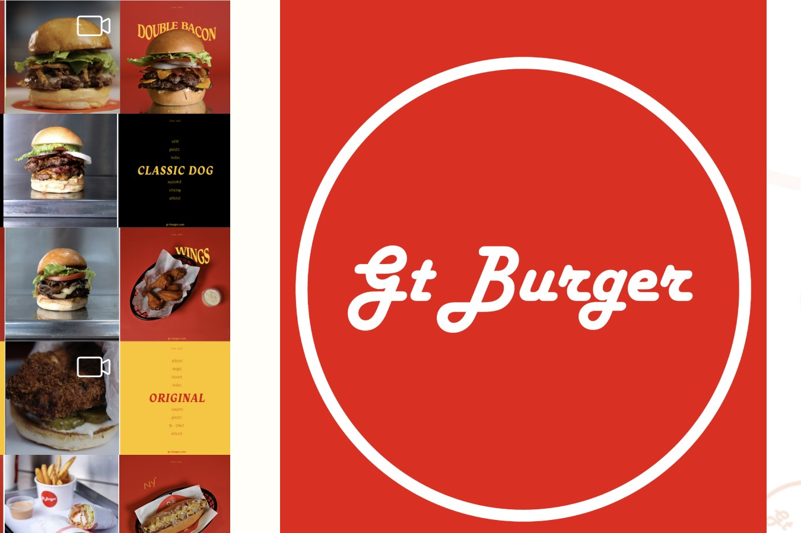
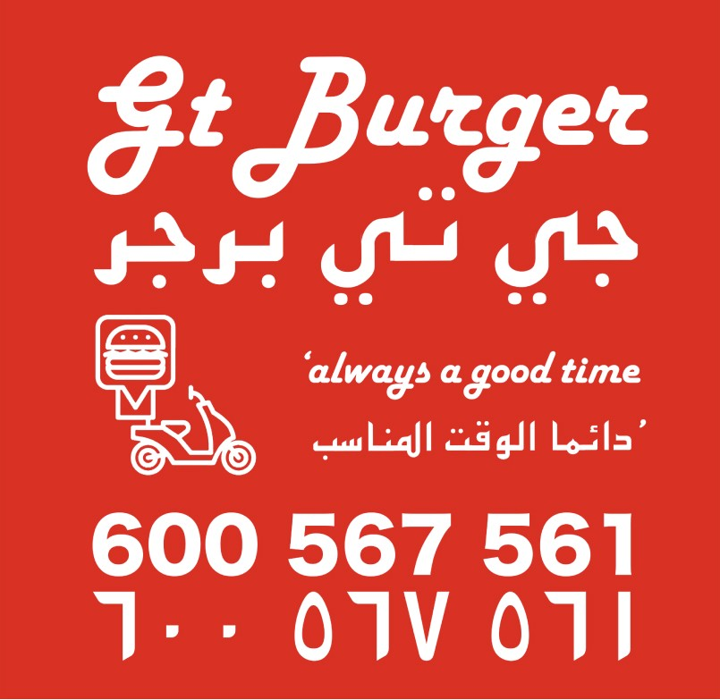

Project 04 / 08 · F&B, End-to-End
GTB · Brand & Digital Build
Client
GTB, Dubai
Role
Brand & Digital Lead
Sector
Food & Beverage
Year
2018 – 2024
Role
Brand and digital lead, end to end. I designed the website and coded part of it.
Team
Solo on brand and digital for seven years.
Timeframe
2018 to 2024. Year one was design and build. After that, weekly design operations. Handover in 2024.
Methods
Naming, identity, menu testing, website design, delivery platform strategy, weekly experiments.
Outcome
A burger concept with no name, identity, website or delivery presence became a consistent top performer on UAE delivery apps such as Deliveroo and Talabat.
The problem
The concept was born in 2012. The first store opened in 2018, with no name, no visual identity, no website and no presence on delivery apps.
It was launching into one of the most competitive digital food markets in the world. The menu was also very large, which made it hard to price and hard to read on a phone.
Let There
Be Meat.
100% Angus Beef · Founders Est. 2012
My role
I designed and built the digital and physical side for seven years. That meant the name, the identity, bilingual Arabic and English menus, uniforms, in-store assets, a responsive website, delivery platform strategy and weekly design operations.
I designed the website and coded part of it. I wrote a Notion design system so the team could edit templates and promo assets without me.
Seven Years, One Person
The first year was entirely design and build. Every year after was design operations, tuned week to week.
Naming & Identity
Launch · Menus, Website, Uniforms
Weekly Design Ops, Pricing & Campaigns
Handover · Independent Operation
Key decisions
I cut the menu by testing it.
The menu was very large. I tested items on the delivery apps and narrowed it to a core offer. That improved margins and tightened the brand.
I designed Arabic and English together.
The bilingual menus were built as one system, not translated afterwards.
I tuned six delivery apps every week.
Dynamic pricing, campaigns and engagement tracking ran weekly on platforms such as Deliveroo and Talabat. Small, steady changes beat big launches.
I built a system the team could run.
The Notion design system meant changes didn't queue behind me. That is also why the work could be handed over in 2024.
The weekly loop
From 2020 to 2023 the work ran as a weekly loop, and each pass fed the next.
The Identity, In Use

Logotype badge

Delivery platform creative · bilingual UAE market
Impact
11.3%
Peak Website Conversion
+220%
Delivery Visibility, Year One
−60%
Manual Content Operations
Measured against a 2019 to 2020 baseline and tracked year on year to 2026.
Outcome
What I made
- ·The name, identity and badge
- ·Bilingual menus, uniforms and in-store assets
- ·A responsive website
- ·Six delivery listings and a weekly operating routine
- ·A Notion design system
What changed
- ·Peak website conversion reached 11.3%.
- ·Delivery visibility rose 220% in year one.
- ·Manual content operations fell 60%.
- ·The business ran independently after the 2024 handover.
Reflection
This was the hardest project I have worked on, and the most rewarding. I carried one concept from an idea in 2012 to a working store with regular customers and events. It taught me that a brand is never finished: the website, the menu and the events all kept changing as we learned what customers wanted.